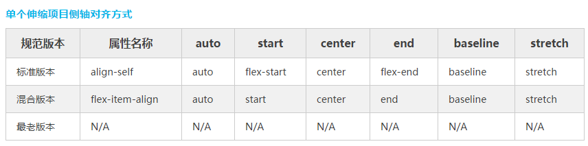

Flexbox布局（Flexible Box）模块(目前处于W3C工作草案)旨在提供一个更佳有效的布局方式，更好的控制项目的对齐和自由分配容器空间，即使它们的大小是未知的或动态的。因此得其名"flex"。
Flex布局背后的主要思想是给容器控制项目（Flex项目）的宽度、高度的能力，使用Flex项目可以自动填满容器的可用空间（主要是适应所有类型的显示设备和屏幕大小）。Flex容器使用Flex项目可以自动放大与收缩，用来填补可用的空闲空间。
注：Flexbox布局比较适合Web应用程序的一些小组件和小规模的布局，而Grid布局（网格单元格布局）更适合用于一些大规模的布局。
因为Flexbox是一个模块，而不是一个单一的属性，他涉及很多东西。其中有些概念是需要我们去理解的，比如“flex容器”-->一些属于容器上的属性(父元素)；“flex项目”-->一些属于容器子元素上的属性；
1）display：定义一个Flex容器，根据其取的值来决定是内联还是块。Flex容器会为其内容建立新的伸缩格式化上下文。
两种方式
display : flex
display : inline-flex
这样做将元素定义为弹性容器，其子元素即弹性子元素。
flex 值表示弹性容器为块级。占用一行。
inline-flex 值表示弹性容器为行内元素，可以多个元素并列在一行 。
2）flex-direction：创建方轴，从而定义Flex项目在Flex容器中放置的方向。
Flexbox是一种单方向的布局概念。认为Flex项目主要排列方式要么是水平排列，要么是垂直列排列
.container {3）flex-wrap：默认情况之下，Flex项目都尽可能在一行显示。你可以根据flex-wrap的属性值来改变，让Flex项目多行显示。方向在这也扮演了一个重要角度，决定新的一行堆放方向。
flex-direction: row | row-reverse | column | column-reverse;
}
.container {4）flex-flow(适用于flex容器元素)：
flex-wrap: nowrap | wrap | wrap-reverse;
}
这是flex-direction和flex-wrap两个属性的缩写。两个属性决定了伸缩容器的主轴与侧轴。默认值是row nowrap（中间用空格隔开）。5）justify-content：设置或检索弹性盒子元素在主轴（横轴）方向上的对齐方式
语法：flex-flow: <‘flex-direction’> || <‘flex-wrap’>
justify-content：flex-start | flex-end | center | space-between | space-around6）align-items：定义flex子项在flex容器的当前行的侧轴（纵轴）方向上的对齐方式。
当弹性盒里一行上的所有子元素都不能伸缩或已经达到其最大值时，这一属性可协助对多余的空间进行分配。当元素溢出某行时，这一属性同样会在对齐上进行控制
7）align-content：align-items： flex-start | flex-end | center | baseline(项目位于容器的基线上) | stretch(默认值。);
伸缩项目可以在伸缩容器的当前行的侧轴上进行对齐，这类似于justify-content属性，但是是另一个方向。align-items可以用来设置伸缩容器中包括匿名伸缩项目的所有项目的对齐方式。
align-content：flex-start |flex-end|center|space-between|space-around | stretch
当伸缩容器的侧轴还有多余空间时，align-content属性可以用来调准伸缩行在伸缩容器里的对齐方式，这与调准伸缩项目在主轴上对齐方式的justify-content属性类似。请注意本属性在只有一行的伸缩容器上没有效果。
2）flex-grow：number该属性控制flex容器是单行或者多行，同时横轴的方向决定了新行堆叠的方向。默认情况，Flex项目是按文档源的流顺序排列。然而，在Flex容器中可以通过order属性来控制Flex项目的顺序源。设置或检索弹性盒模型对象的子元素出現的順序。
order定义将会影响 <' position '> 值为static元素的层叠级别，数值小的会被数值大的盖住。
3）flex-shrink：<number>设置或检索弹性盒的收缩比率该属性控制flex容器是单行或者多行，同时横轴的方向决定了新行堆叠的方向。如果所有Flex项目的flex-grow设置为1时，表示Flex容器中的Flex项目具有相等的尺寸。如果你给其中一个Flex项目设置flex-grow的值为2，那么这个Flex项目的尺寸将是其他Flex项目两倍（其他Flex项目的flex-grow值为1）。注意：flex-grow取负值将失效。
4）flex-basis:<length> | <percentage> | auto | content根据弹性盒子元素所设置的收缩因子作为比率来收缩空间。注意：flex-shrink取负值将失效。
5）flex：none | <' flex-grow '> <' flex-shrink >'? || <' flex-basis '>设置或检索弹性盒伸缩基准值。如果所有子元素的基准值之和大于剩余空间，则会根据每项设置的基准值，按比率伸缩剩余空间.。
如果设置为0，内容不在考虑周围额外空间。如果设置为auto，额外空间会基于flex-grow值做分布。如下图所示：
6）align-self：auto | flex-start | flex-end | center | baseline | stretch复合属性。设置或检索弹性盒模型对象的子元素如何分配空间。
flex是flex-grow，flex-shrink和flex-basis三个属性的缩写。第二个和第三个参数(flex-shrink和flex-basis)是可选值。其默认值是0 1 auto。
如果缩写「flex: 1」, 则其计算值为「1 1 0%」
如果缩写「flex: auto」, 则其计算值为「1 1 auto」
如果「flex: none」, 则其计算值为「0 0 auto」
如果「flex: 0 auto」或者「flex: initial」, 则其计算值为「0 1 auto」，即「flex」初始值
定义flex子项单独在侧轴（纵轴）方向上的对齐方式。
注意：float，clear和vertical-align属性在Flex项目中无效。

2）常用Media query设备特性在实际中媒体类型有近10中之多，实际常用的也就那么几种。不同的媒体类型引用方法也是有很多的，常见的媒体类型的引用主要有：link标签、xml方式、@import和css3新增的@import几种。
1、 link方法：
link方法引入类型其实就是在<link>标签引入样式的时候，通过link标签中的media属性来制定不同的媒体类型，这种方式引入媒体类型时常跟着引用的样式文件走。如：
<link rel="stylesheet" type="text/css" href="style.css" media="screen" />
<link rel="stylesheet" type="text/css" href="print.css" media="print" />
2、 @media方式
@media是css3中新引进的一个特性，被称为媒体查询。在页面中也可以通过这个属性来引入媒体查询，它和@import有点类似，也是具有2中方式
A：在样式文件中引入媒体类型： @media screen{ 选择器{ 你的样式代码 } }
B：使用@media 引入媒体类型的方式是在head标签中的style引入
<head>
<style type="text/css">
@media screen{选择器{你的代码样式}}
</style>
</head>
Responsive 网页设计不但要考虑其元素布局的秩序，还要做到“有求必应”，因此需要满足三个条件。2）Responsive 中的术语
1、网站必须建立灵活的网格基础；
2、引用到网站的图片必须是可伸缩的；
3、不同的显示风格，需要在Media Query上设置不同的样式
注意：缺少任何一个功能，就不能称为是合格的Responsive 网页设计
3）Responsive 布局技巧1、流体网格
流体网格是一个简单的网格系统，这种网格设计参考了流体设计中的网格系统，将每个网格格子使用百分比单位
来控制网格大小，这种网格系统最大的好处就是让网格大小随时根据屏幕尺寸做出相对应的比例缩放。
2、弹性图片
弹性图片指的是不给图片设置固定尺寸，而是根据流体网格进行缩放，用于适应各种网格的尺寸。而实现方法是
比较简单，一条代码就能确定 比如img{max-width：100%；}但是在IE8浏览器会出现图片失踪的bug，如果
我们给每个断点提供不同的图片是比较头疼的一件事情，所以我们可以使用：
1）、使用background-image给元素添加背景图片
2）、显示/隐藏父元素，给父元素使用不同的图片，然后通过media query来控制这些图片显示或者隐藏
3、媒体查询媒体查询可以根据设备的尺寸，查询出适配的样式，使用这个属性可以根据用户终端设备适配对
应的样式，Responsive 设计最关注的的是根据用户的使用设备的当前宽度，web页面将加载一个备用的样式，
实现特定的页面风格
4、屏幕分辨率指的是用户使用的设备浏览web页面时的分辨率，比如智能手机浏览器，移动电脑浏览器，平板
电脑浏览器和桌面浏览器。只有知道有哪种分辨率，才能调用对应的样式。
5、主要断点：简单来说就是设备宽度的临界点，媒体特性中min-width和max-width对应的属性值就是响应式
设计中的断点值，简单来说就是使用主要断点和次要断点，创建媒体查询的条件，而每个断点会对应一个样式文件。
设置断点要把握以下3个要点
1）、满足主要的断点
2）、有可能的话添加一些别的断点
3）、设置高于1024px的桌面断点。
4）Meta 标签定义1.尽量少用无关紧要的div
2.不要使用内联元素(inline)
3.尽量少用js或flash
4.丢去没用的绝对定位和浮动样式
5.屏弃任何冗余结构和不使用100%设置那么有哪些设置能帮助Responsive确定更好的布局呢？
1.使用HTML5 Doctype和相关指南
2.重置好你的样式（reset.css）
3.一个简单的有语义的核心布局
4.给重要的网页元素使用简单的技巧，比如导航菜单之类元素
为了让智能手机根据媒体查询匹配对应的样式，特意添加了一个特殊的meta标签。主要作用就是让智能手机浏览网页时能进行优化，并且可以自定义可视区域的尺寸和缩放级别。
设置Meta标签
<name="viewport" content="width=device-width, initial-scale=1.0, maximum-scale=1.0, user-scalable=no">
这段代码的几个参数解释：
width = device-width：宽度等于当前设备的宽度
initial-scale： 初始的缩放比例（默认设置为1.0）
minimum-scale：允许用户缩放到的最小比例（默认设置为1.0）
maximum-scale：允许用户缩放到的最大比例（默认设置为1.0）
user-scalable：用户是否可以手动缩放（默认设置为no，因为我们不希望用户放大缩小页面）
px：绝对单位，页面按精确像素展示
em：相对单位，基准点为父节点字体的大小，如果自身定义了font-size按自身来计算（浏览器默认字体是16px），整个页面内1em不是一个固定的值。
rem：相对单位，可理解为”root em”, 相对根节点html的字体大小来计算，CSS3新加属性，chrome/firefox/IE9+支持。
(另外需注意chrome强制最小字体为12号，即使设置成 10px 最终都会显示成 12px，当把html的font-size设置成10px,子节点rem的计算还是以12px为基准，所以网上很多文章提到的将html的font-size设为10方便计算不是那么可取)。
rem在移动端应用可参考淘宝的页面http://m.taobao.com (html的font-size通过动态计算获取)
vw：viewpoint width，视窗宽度，1vw等于视窗宽度的1%。
vh：viewpoint height，视窗高度，1vh等于视窗高度的1%。
vmin：vw和vh中较小的那个。
vmax：vw和vh中较大的那个。
vw, vh, vmin, vmax：IE9+局部支持，chrome/firefox/safari/opera支持，iOS safari 8+支持，Android browser4.4+支持，chrome for android39支持
1、column-count：分栏的个数
2、column-width：分栏的宽度
3、column-gap：分栏的间距
4、column-rule：分栏的边框
5、column-span：all/1合并分栏 火狐不支持